Farm Shape Analysis: Linking Geometry with Crop Yield and Diversity
landscape-analysis
agriculture
Author
Mo Wang
Published
December 15, 2024
1. Introduction and Motivation
In modern agriculture, the geometric features of farmland play a crucial role in farm management and planning. Understanding these characteristics enables farmers to make informed decisions, manage resources more efficiently, and promote sustainable agricultural practices.
This research leverages data from Litefarm, an open-source agri-tech application designed to support sustainable agriculture. Litefarm provides detailed information about farmland, including field shapes, offering valuable insights for analysis. However, as an open platform, Litefarm’s database may include unrealistic or inaccurate data entries, such as “fake farms.” Cleaning and validating this data is essential for ensuring the reliability of agricultural analyses.
In this blog, we focus on identifying fake farms by analyzing field shapes to detect unrealistic entries. Our goal is to enhance data accuracy, providing a stronger foundation for future agriculture-related research.
Litefarm Interface
2. Dataset Overview and Preparation
Data Source
The data for this study was extracted from Litefarm’s database, which contains detailed information about farm geometries, locations, and user associations. The dataset included the following key attributes:
Farm-Level Information:
Each farm is uniquely identified by a farm_ID, representing an individual farm within the Litefarm database.
Polygon-Level Information:
Each farm consists of multiple polygons, corresponding to distinct areas such as fields, gardens, or barns. Each polygon is uniquely identified by a location_ID, ensuring that every area within a farm is individually traceable.
Geometric Attributes:
Area: The total surface area of the polygon.
Perimeter: The boundary length of the polygon.
Vertex Coordinates:
The geographic shape of each polygon is defined by a list of vertex coordinates in latitude and longitude format, represented as: [(lat1, lon1), (lat2, lon2), ..., (latN, lonN)].
Polygon Types:
The polygons in each farm are categorized into various types:
Fields
Farm site boundaries
Residences
Barns
Gardens
Surface water
Natural areas
Greenhouses
Ceremonial areas
This rich dataset captures farm structures and geometries comprehensively, enabling the analysis of relationships between polygon features and agricultural outcomes.
This study focuses specifically on productive areas—gardens, greenhouses, and fields—as these contribute directly to agricultural output. Since different polygon types possess unique geometric characteristics, we focused on a single type to maintain analytical consistency.
As the Litefarm database is dynamic and continuously updated, the data captured as of November 28th showed that 36.4% of farms included garden areas, 20.7% had greenhouse areas, and nearly 70% contained fields. To ensure a robust and representative analysis, we focused on field polygons, which had the highest proportion within the dataset.
Refined Litefarm Dataset
To ensure that only valid and realistic farm data was included in the analysis, we applied rigorous SQL filters to the Litefarm database. These filters excluded:
Placeholder farms and internal test accounts.
Deleted records.
Farms located in countries with insufficient representation (fewer than 10 farms).
The table below summarizes the results of the filtering process and the composition of the cleaned dataset:
Description
Count
Initial number of farms in Litefarm
3,559
Farms after SQL filtering
2,919
Farms with field areas
2,022
Farms with garden areas
1,063
Farms with greenhouse areas
607
Total number of field polygons
6,340
By narrowing the focus to field polygons, we ensured that the dataset was both robust and suitable for exploring the relationship between geometric features and agricultural outcomes.
3. Shape Analysis
This study focuses on the geometric properties of field polygons, as these are essential for understanding farm structures and ensuring data reliability. Each field polygon is represented by a series of vertices in latitude-longitude pairs, which outline its geometric boundaries. These vertices are the foundation for calculating key metrics such as area, perimeter, and more complex shape properties.
To perform a robust analysis, we systematically processed and evaluated the field polygon data through the following steps:
1. Vertex Distribution Analysis
The first step in our analysis was to examine the vertex distribution of the field polygons to understand their general characteristics and ensure data quality. A box plot was created to visualize the distribution of vertex counts: 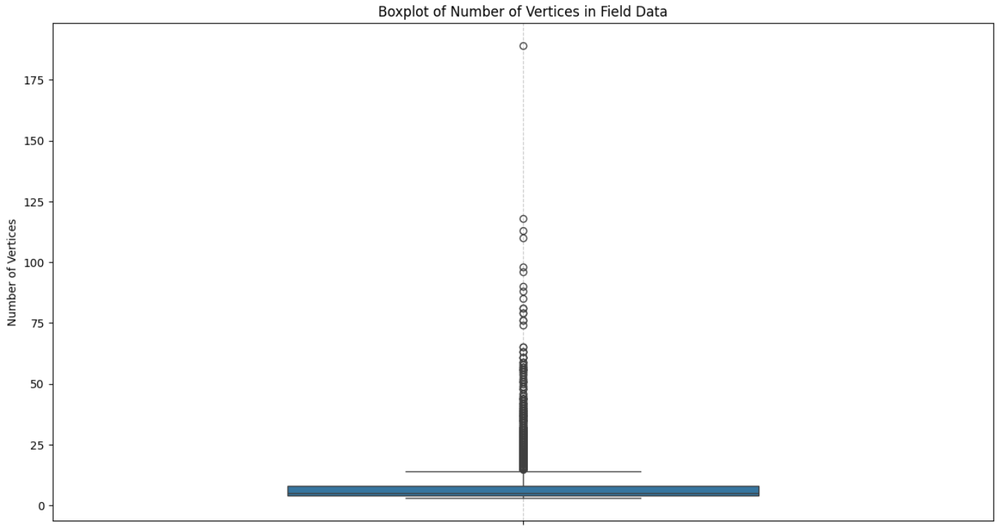
The results revealed a wide range of vertex counts, spanning from 3 to 189 vertices. This variability required filtering to address potential outliers. Using the z-score method, we identified and excluded extreme values, capping the maximum vertex count at 34.
After filtering, we analyzed the revised vertex distribution using a histogram, which revealed that 47.4% of field polygons had exactly four vertices:
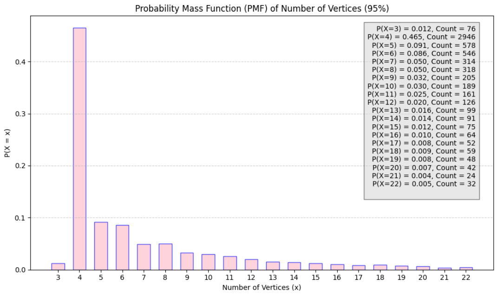
histogram of number of veritces
2. Validation of Area and Perimeter Metrics
Recalculation Process:
Vertex coordinates, initially in latitude-longitude format, were transformed into a planar coordinate system (EPSG:6933) to enable precise calculations.
Area and perimeter were computed directly from the transformed vertex data.
Scatter plots comparing the user-provided values with the recalculated metrics showed strong alignment, with most points clustering around the diagonal (dashed line), confirming the accuracy of the recalculated values:
Perimeter Comparison
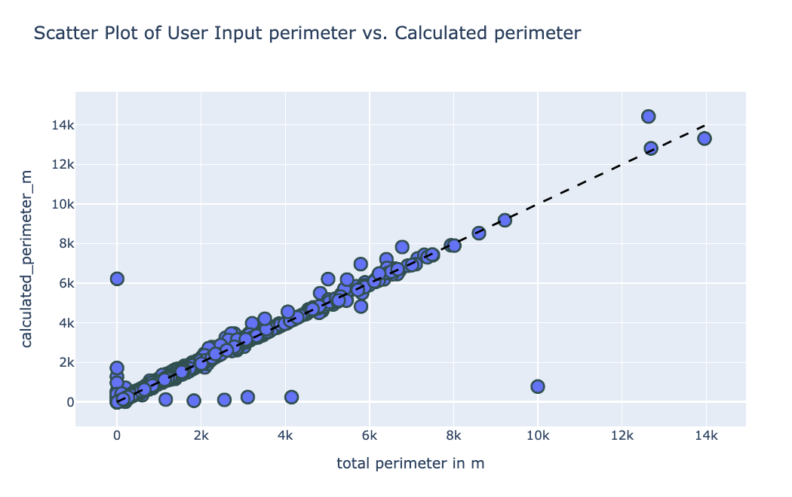
Area Comparison
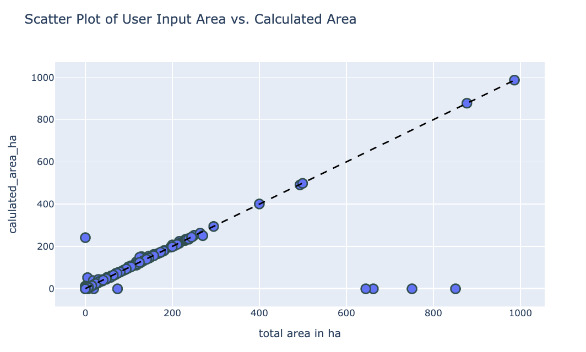
This validation step provided confidence in the accuracy of the recalculated metrics, allowing us to proceed with subsequent shape analysis using reliable data.
Field Polygon Standardization and Preparation
To focus on the geometric properties of field polygons, we projected all polygons into a size-and-shape space. This transformation isolates the shape and scale of the polygons while removing variations caused by rotation and translation. The size-and-shape space ensures consistent and meaningful comparisons of the underlying geometric features.
While this study emphasizes polygon shapes, we recognize that area is a critical feature in agricultural studies due to its relationship with factors like regional regulations and agricultural policies. Thus, we preserved the size (scaling) component in our analysis to maintain the relevance of area.
To ensure uniformity and consistency in the dataset, we performed the following preprocessing steps:
Standardizing Landmark Points:
To enable meaningful comparisons in the size-and-shape space, each polygon was resampled to have exactly 34 evenly spaced points along its boundary. The following Python function illustrates this process:
Code
import foliumimport jsonfrom shapely.geometry import shape, Polygon, Point, MultiPoint, MultiPolygon, LineString,LinearRing, MultiLineStringfrom shapely.ops import unary_union, transform, nearest_pointsfrom collections import defaultdictimport geopy.distanceimport pandas as pdimport mathimport numpy as npfrom itertools import combinationsimport itertoolsimport pyprojfrom functools import partialfrom collections import defaultdictimport altair as altimport matplotlib.pyplot as pltimport plotly.graph_objs as gofrom pyproj import Transformer, CRS import seaborn as snsimport plotly.express as pximport loggingfrom shapely.validation import explain_validityimport geopandas as gpdimport astfrom geographiclib.geodesic import Geodesicfrom sklearn.preprocessing import StandardScalerfrom sklearn.decomposition import PCAfrom geopy.distance import geodesicfrom geomstats.geometry.pre_shape import PreShapeSpacefrom geomstats.visualization import KendallDisk, KendallSphere
Code
def resample_polygon(projected_coords, num_points=34):""" Resample a polygon's boundary to have a specified number of evenly spaced points. Parameters: - projected_coords: List of coordinates defining the polygon's boundary. - num_points: The number of evenly spaced points to resample (default is 34). Returns: - new_coords: List of resampled coordinates. """ ring = LinearRing(projected_coords) total_length = ring.length distances = np.linspace(0, total_length, num_points, endpoint=False) new_coords = [ring.interpolate(distance).coords[0] for distance in distances]return new_coords
Ensuring Consistent Vertex Direction:
All polygons were standardized to have vertices drawn in the same direction (clockwise or counterclockwise). This step ensures that the orientation of the vertices does not introduce inconsistencies in the analysis.
Code
def is_clockwise(coords):""" Check if the polygon vertices are in a clockwise direction. Parameters: - coords: List of coordinates defining the polygon's boundary. Returns: - True if the polygon is clockwise; False otherwise. """ ring = LinearRing(coords)return ring.is_ccw ==Falsedef make_clockwise(coords):""" Convert the polygon's vertices to a clockwise direction, if it is not Parameters: - coords: List of coordinates defining the polygon's boundary. Returns: - List of coordinates ordered in a clockwise direction. """ifnot is_clockwise(coords): return [coords[0]] + coords[:0:-1] # Reverse the vertex order, keeping the start pointreturn coords
The image illustrates four polygons that have been standardized by resampling them to have 34 evenly spaced points, with all vertices aligned in a clockwise direction.
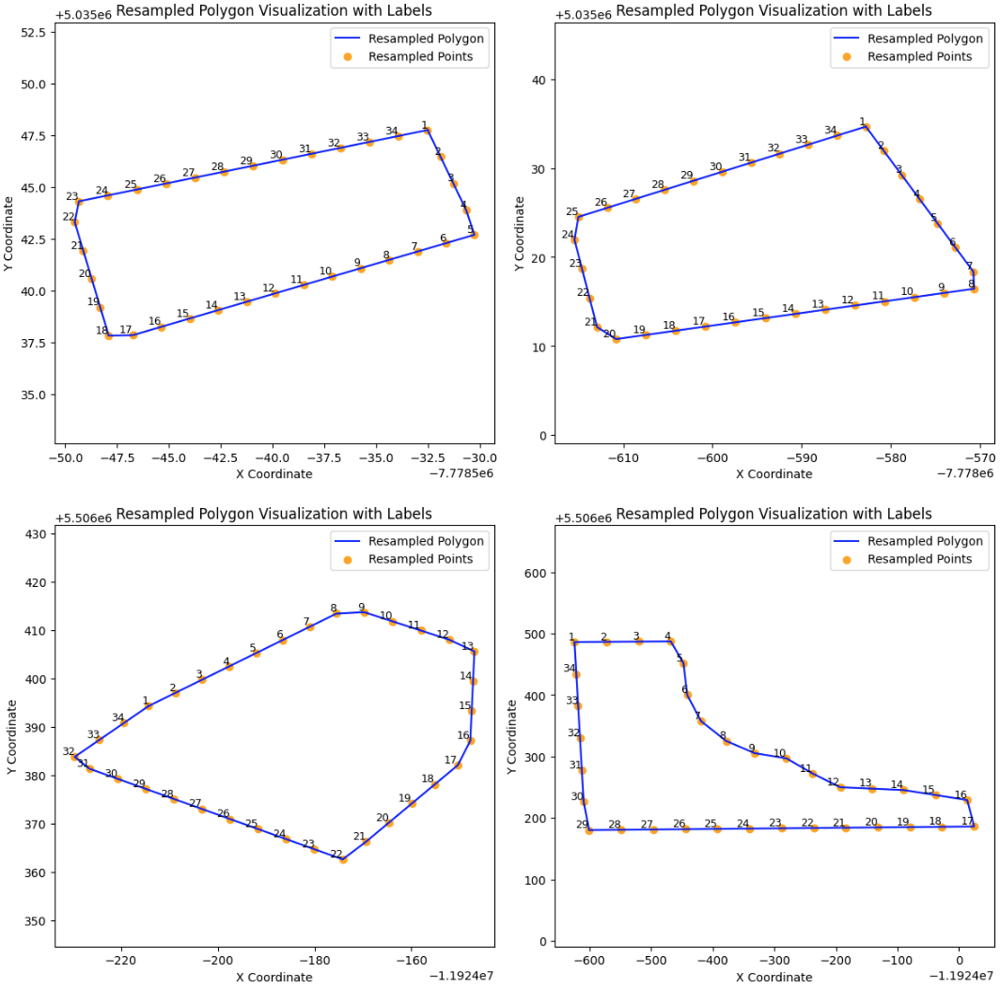
The standardized polygon
Validation of Standardization
To confirm the accuracy of these transformations, we compared the areas and perimeters of the resampled polygons with the original values. The results demonstrated minimal deviation, indicating the transformations preserved the integrity of the shapes.
Perimeter Comparison
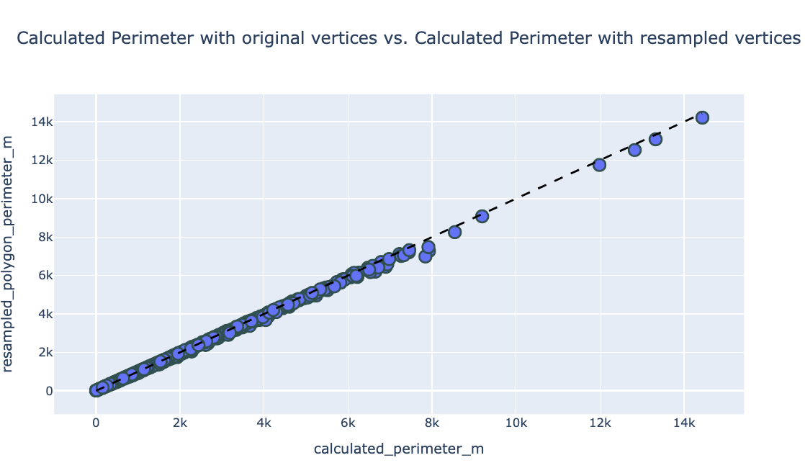
perimeter comparison
Area Comparison
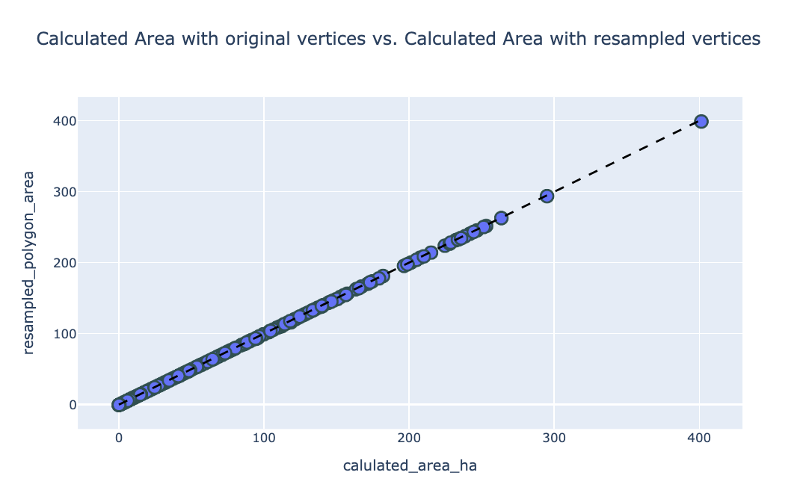
area comparison
By meeting these preprocessing requirements, we ensured that the polygons were accurately prepared for subsequent shape analysis.
Shape Alignment and Fréchet Mean Analysis
With data preparation complete, the polygons were ready for analysis in the size-and-shape space. This specialized framework enables consistent comparison of shapes by accounting for geometric differences, including scaling, translation, and rotation. It provides a robust foundation for meaningful geometric analysis.
The polygons were aligned using Procrustes analysis(Dryden and Mardia 2016), and their Fréchet Mean was iteratively computed in Euclidean space. This process standardizes the shapes, ensuring variations caused by translation and rotation are removed, allowing for accurate and meaningful comparisons.
The Fréchet Mean(Dryden and Mardia 2016) represents the “average” shape in a geometric space (manifold), minimizing the average squared distance to all sample shapes. It serves as a standardized and central representation of the dataset.
Step-by-Step Overview
Shape Alignment:
The align_shape function performs Procrustes alignment through the following steps:
Removing Translation:
The centroid (average position of all points) of each shape is computed. The shape is then centered by subtracting its centroid from all points, ensuring the shape is position-independent.
Removing Rotation:
Using Singular Value Decomposition (SVD), the optimal rotation matrix is calculated to align the target shape with the reference shape. This step removes rotation differences while preserving the relative positions of the points.
Measuring Shape Differences:
The riemannian_distance function computes the Riemannian distance between two shapes in size-and-shape space. This metric quantifies geometric differences between shapes, considering both size and rotation.
Riemannian Distance in Size-and-Shape Space
Given two \(k\)-point configurations in \(m\)-dimensions, \(X_1^o, X_2^o \in \mathbb{R}^{k \times m}\), the Riemannian distance(Dryden and Mardia 2016) in size-and-shape space is defined as:
This formula ensures that the distance captures both shape similarity and scaling differences, making it a robust tool for geometric analysis.
Iterative Fréchet Mean Calculation:
The algorithm begins with an initial reference shape and aligns all other shapes to it using Procrustes alignment.
The Fréchet Mean is then calculated as the average shape in Euclidean space.
The shapes are iteratively re-aligned to the updated Fréchet Mean, refining the alignment and mean calculation until convergence is achieved.
Python Implementation
The following Python code implements the entire process of shape alignment, Riemannian distance computation, and iterative Fréchet Mean calculation.
Code
def align_shape(reference_shape, target_shape):""" Align the target shape to the reference shape using Procrustes alignment. Parameters: - reference_shape: The reference shape to align to. - target_shape: The shape to be aligned. Returns: - aligned_shape: The aligned target shape. """ reference_shape = np.array(reference_shape) target_shape = np.array(target_shape)# Step 1: Remove the translation centroid_reference = np.mean(reference_shape, axis=0) centroid_target = np.mean(target_shape, axis=0) centered_reference = reference_shape - centroid_reference centered_target = target_shape - centroid_target# Step 2: Remove the rotation u, s, vh = np.linalg.svd(np.matmul(np.transpose(centered_target), centered_reference)) r = np.matmul(u, vh) aligned_shape = np.matmul(centered_target, r)return aligned_shapedef riemannian_distance(reference_shape, target_shape):""" Compute the Riemannian distance between two shapes. Parameters: - reference_shape: The reference shape. - target_shape: The target shape. Returns: - distance: The Riemannian distance between the shapes. """ reference_shape = np.array(reference_shape) target_shape = np.array(target_shape)# Step 1: Compute centroid sizes S1 = np.linalg.norm(reference_shape) S2 = np.linalg.norm(target_shape)# Step 2: Remove translation by centering the shapes centered_reference = reference_shape - np.mean(reference_shape, axis=0) centered_target = target_shape - np.mean(target_shape, axis=0)# Step 3: Compute optimal rotation using SVD H = np.dot(centered_target.T, centered_reference) U, _, Vt = np.linalg.svd(H) R = np.dot(U, Vt)# Step 4: Align target shape aligned_target = np.dot(centered_target, R)# Step 5: Compute the Riemannian distance cosine_rho = np.trace(np.dot(aligned_target.T, centered_reference)) / (S1 * S2) cosine_rho = np.clip(cosine_rho, -1, 1) distance = np.sqrt(S1**2+ S2**2-2* S1 * S2 * cosine_rho)return distance# Iterative Fréchet Mean Calculationepsilon =1e-6max_iterations =100reference_shape = field_data['resampled_point'].iloc[0] aligned_shapes = []# Align all shapes to the initial reference shapefor target_shape in field_data['resampled_point']: aligned_shape = align_shape(reference_shape, target_shape) aligned_shapes.append(aligned_shape)# Initialize Euclidean space and calculate initial Fréchet Meaneuclidean_space = Euclidean(dim=aligned_shapes[0].shape[1])frechet_mean = FrechetMean(euclidean_space)previous_frechet_mean_shape = frechet_mean.fit(aligned_shapes).estimate_converged =Falseiteration =0frechet_means = [previous_frechet_mean_shape]whilenot converged and iteration < max_iterations: iteration +=1 aligned_shapes2 = []for target_shape in field_data['resampled_point']: aligned_shape = align_shape(previous_frechet_mean_shape, target_shape) aligned_shapes2.append(aligned_shape)# Calculate new Fréchet Mean frechet_mean = FrechetMean(euclidean_space) current_frechet_mean_shape = frechet_mean.fit(aligned_shapes2).estimate_ frechet_means.append(current_frechet_mean_shape)# Check convergence difference = riemannian_distance(previous_frechet_mean_shape, current_frechet_mean_shape)if difference < epsilon: converged =Trueelse: previous_frechet_mean_shape = current_frechet_mean_shape
Global Fréchet Mean and Outlier Detection
Here is the global Fréchet mean calculated from all field polygons:
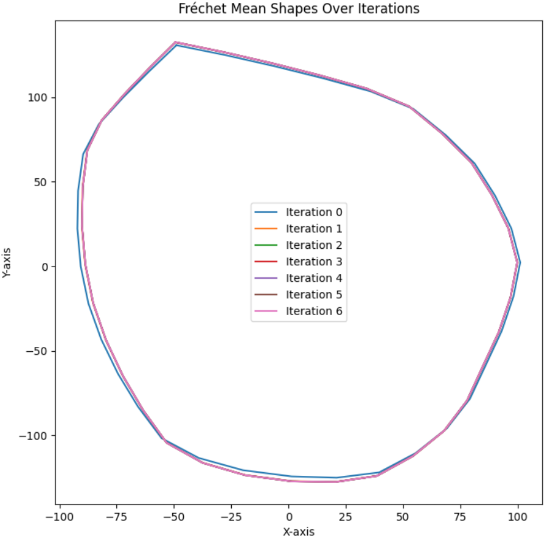
The global mean shape
The following image illustrates the original polygon and its alignment with the Fréchet mean:
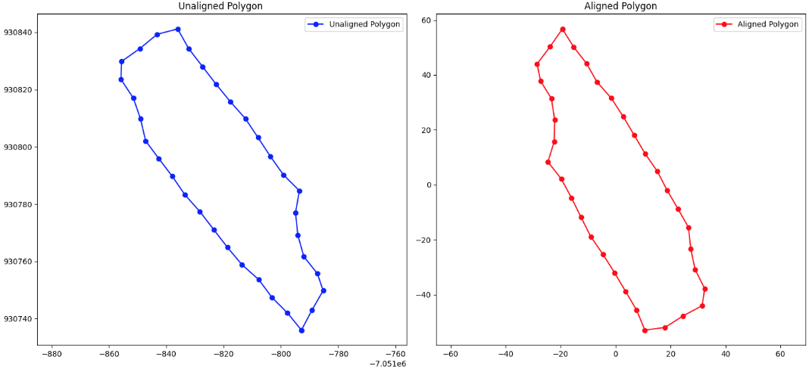
Aligned Shape
After aligning all shapes to the Fréchet mean, the riemannian_distance function was used to calculate the distances between the mean shape and each aligned shape. To identify potential outliers, the z-score method was applied to these distance values.
Below are the four field polygons detected as outliers using the global Fréchet mean:
Code
import pandas as pd# Load the CSV filefour_potiential_fake_farm = pd.read_csv("data/potiential_fake_field.csv")# Display the tablefour_potiential_fake_farm # Or use `data` to show the entire table
Farm Number
country_name
type
calculated_perimeter_m
calulated_area_ha
number of vertices
distance_to_frechet_mean
z_score
0
Farm 310
United States
field
744797.7117
2.600780e+06
3
591590.0609
48.784896
1
Farm 71
Canada
field
864206.5248
4.251124e+06
5
709800.2531
58.580655
2
Farm 45
Canada
field
341370.9916
8.453115e+04
5
177371.8498
14.459753
3
Farm 2792
India
field
200958.9993
2.170029e+05
4
166440.3554
13.553890
Fréchet Mean Shape by Country
The shape of field polygons varies significantly across different countries. To capture this variation, we calculated the Fréchet mean shape* for each country based on the fields located within that specific country.
The plot below summarizes the Fréchet mean shapes for all countries in the dataset.
In this visualization, different colors represent different continents. It is evident that both the shapes and areas of the field polygons differ substantially across regions, highlighting the diversity in field geometry across countries.
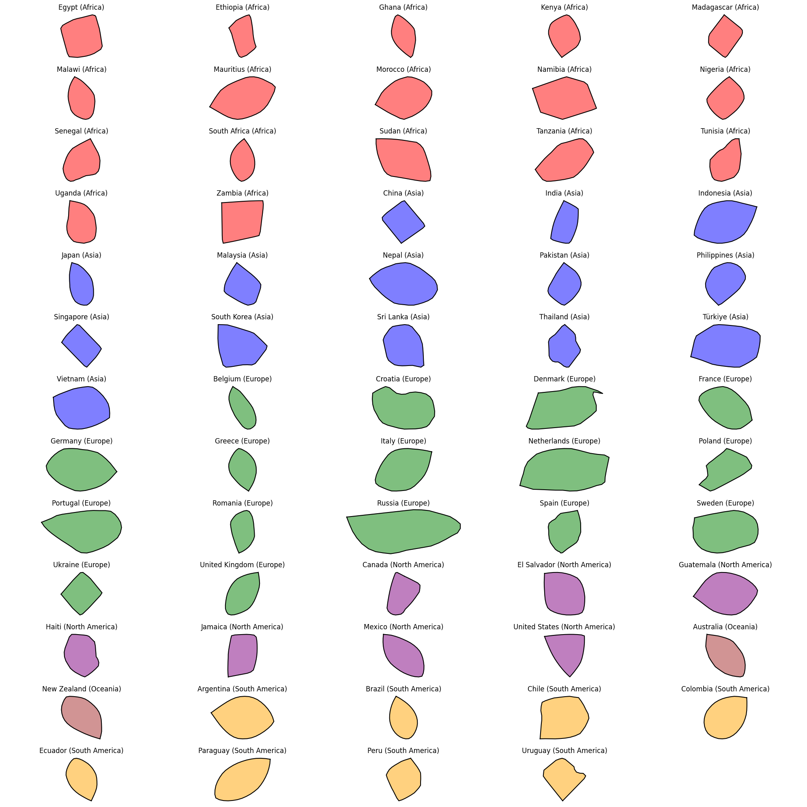
Summary of Countries’ Mean Shapes
Assessing Mean Shape Representation in Countries with Limited Data
To evaluate the representativeness of the mean shape, we specifically selected countries with fewer than 10 polygons. The small number of polygons in these cases allows for easier visualization, helping us assess whether the mean shape effectively captures the overall geometric characteristics of these datasets.
Zambia
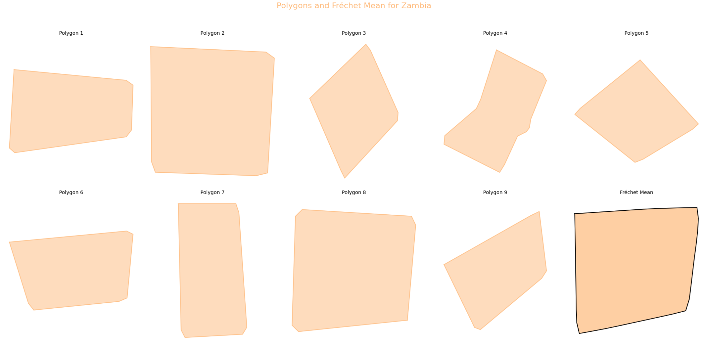
Field polygons and Fréchet mean for Zambia
Chile
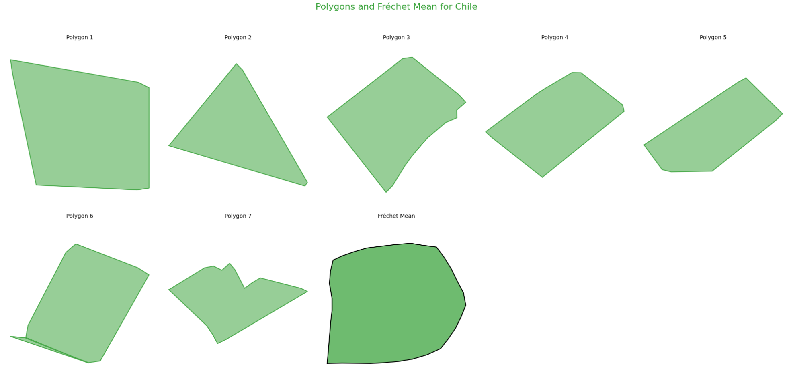
Field polygons and Fréchet mean for Chile
From the above plots, we can draw the following conclusions:
Effective Representation with Similar Shapes:
When the field polygons within a country have similar shapes, the calculated Fréchet mean serves as an effective representation of the general shape trend.
Limitations with Diverse Shapes:
If the field polygons within a country show significant variation in their shapes, the Fréchet mean becomes less representative and may fail to adequately capture the geometric diversity of the dataset.
Detecting Potential Fake Field Polygons
Building on the country-level mean shape analysis, we applied the same methodology to detect potential fake field polygons. For each country, field polygons were aligned to their corresponding Fréchet mean, and the z-score technique was used to identify anomalies based on the distances between each polygon and the mean shape.
Through this analysis, we identified 51 potential fake field polygons. To verify their validity, we visualized each field polygon on satellite imagery. The results are summarized in the plot below:
Gray markers: Fake fields
Pink markers: True fields
Orange markers: Potential fake fields
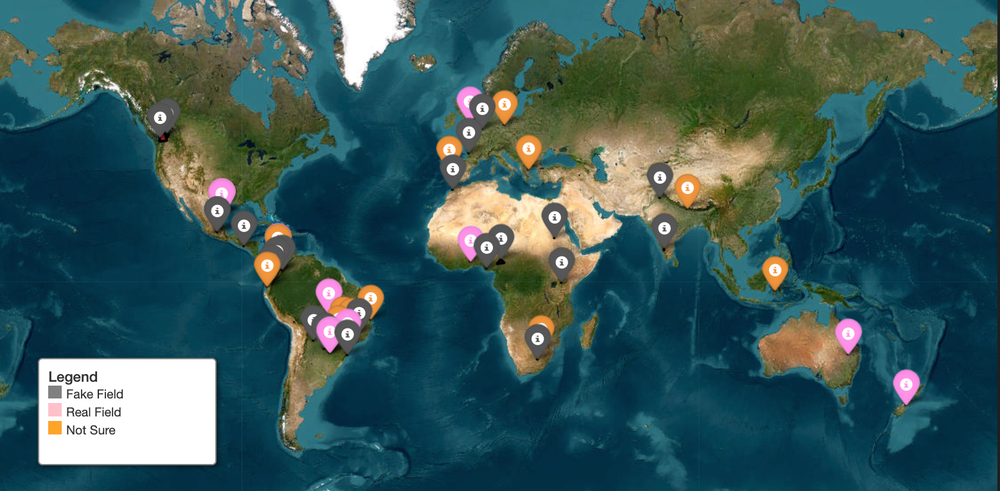
Satellite plot for all 51 potential fake fields
After visualizing all 51 potential fake field polygons, the findings were as follows:
45.1% were confirmed as fake fields.
29.4% were ambiguous, meaning they could potentially be either fake or real fields, requiring further investigation.
25.5% were determined to be true fields.
Below are examples of confirmed fake fields. These polygons often exhibit:
Unusual geometric shapes
Sizes that are disproportionately large compared to neighboring field polygons
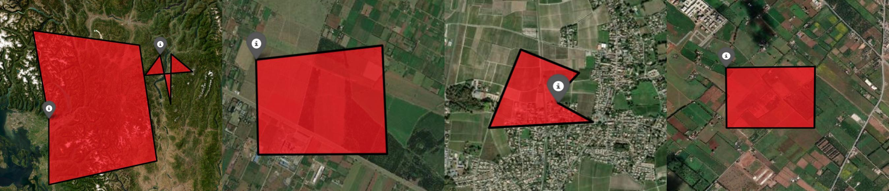
fake field polygons
Future Work
Our analysis successfully identified a significant number of potential fake field polygons, with nearly half of these cases being validated as genuinely fake. While this demonstrates the effectiveness of our approach, there is still room to improve the accuracy and reliability of the detection process. To further refine our results, future efforts will focus on:
Incorporate Geographic Information:
Enrich the dataset with geographic features such as proximity to natural landmarks (e.g., mountains, rivers) or man-made structures (e.g., urban areas, roads). These features could provide valuable context for improving the calculation of the Fréchet mean and detecting anomalies more effectively.
Improve Outlier Detection Methods:
Leverage advanced machine learning models, such as clustering algorithms or ensemble methods, to identify subtle patterns and relationships that may indicate fake fields. Techniques like unsupervised learning or deep anomaly detection could also be explored to improve performance.
References
Dryden, Ian L., and Kanti V. Mardia. 2016. Statistical Shape Analysis, with Applications in r. Wiley Series in Probability and Statistics. Chichester, UK: John Wiley & Sons, Ltd. https://doi.org/10.1002/9781119072492.